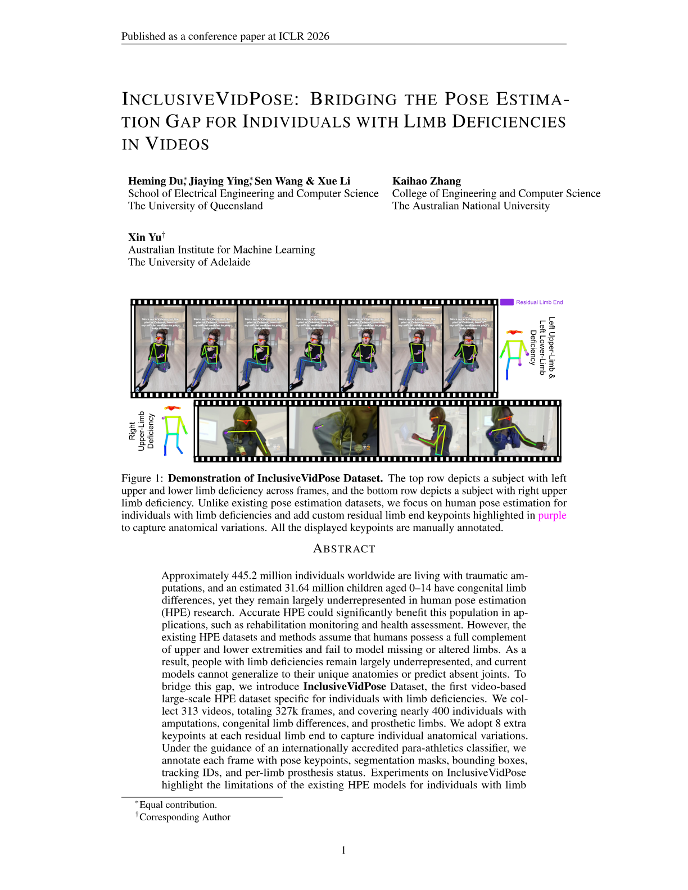
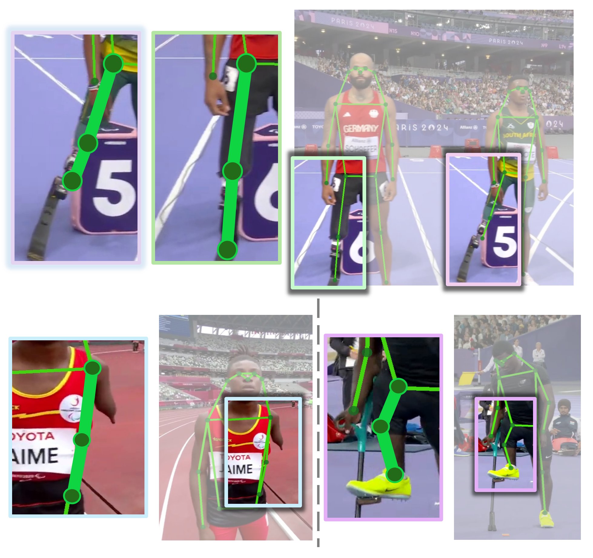
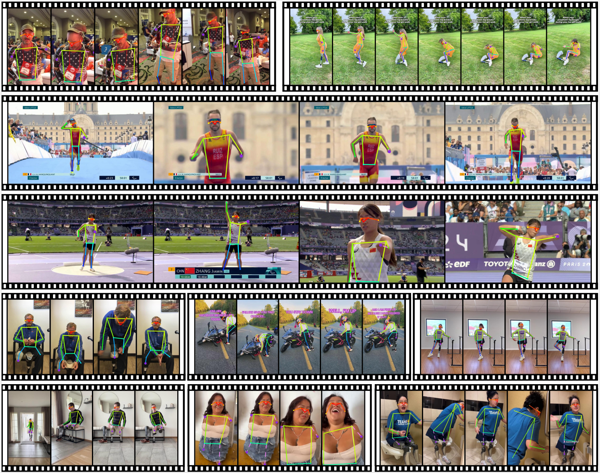

Video debug information:
Loading video information...

Authors: Heming Du, Jiaying Ying, Sen Wang, Xue Li, Kaihao Zhang, Xin Yu
Venue: ICLR 2026 Poster
@inproceedings{
du2026inclusivevidpose,
title={InclusiveVidPose: Bridging the Pose Estimation Gap for Individuals with Limb Deficiencies in Video-Based Motion},
author={Heming Du and Jiaying Ying and Sen Wang and Xue Li and Kaihao Zhang and Xin Yu},
booktitle={The Fourteenth International Conference on Learning Representations},
year={2026},
url={https://openreview.net/forum?id=SyQqXAdWUq}
}Approximately 445.2 million individuals worldwide are living with traumatic amputations, and an estimated 31.64 million children aged 0–14 have congenital limb differences. These people could benefit greatly from accurate human pose estimation (HPE) in applications such as rehabilitation monitoring and health assessment. Regrettably, existing HPE systems trained on standard datasets fail to accommodate atypical anatomies and prosthetic occlusions, leaving this population unsupported. However, widely used benchmarks like MS COCO and MPII Human Pose include only able-bodied people with complete sets of keypoints. These datasets and the methods built on them assume that every keypoint of a presented individual exists, making no provision for missing or altered limbs. As demonstrated in the figure next, the MS COCO–trained ViTPose model produces significant errors when applied to images of individuals with limb deficiencies. Consequently, people with limb deficiencies are excluded from current benchmarks, and models trained on these datasets fail to generalize to their anatomies. To address this gap, we introduce InclusiveVidPose, the first video-based HPE dataset focused on individuals with limb deficiencies.

InclusiveVidPose Dataset, the first video-based HPE dataset specific for individuals with limb deficiencies. We collected 313 videos, totaling over 327k frames, and covering 398 individuals with amputations, congenital limb differences, and prosthetic limbs. We introduce custom keypoints at each residual limb end to capture individual anatomical variations.
